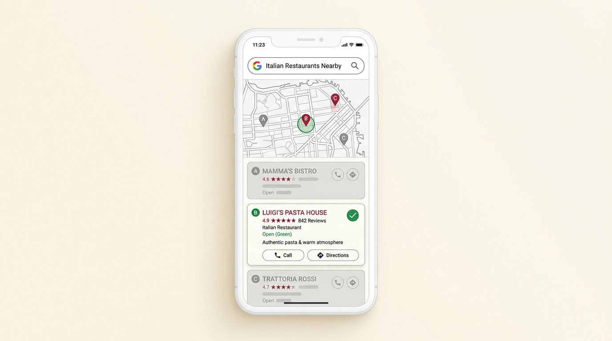
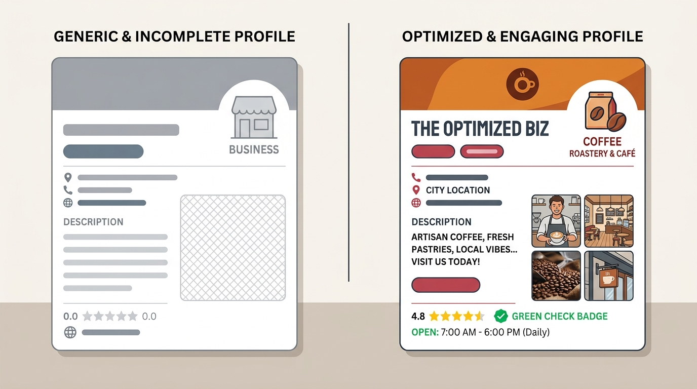

Google Meu Negócio em Volta Redonda: por que ter um perfil não é a mesma coisa que ter um perfil que aparece
Muita empresa em Volta Redonda já tem um perfil no Google. O problema é que "ter perfil" e "aparecer quando alguém pesquisa" são duas coisas bem diferentes, e a maioria só resolveu a primeira.

O perfil existe, mas não foi feito pra ser encontrado
Criar uma ficha no Google Meu Negócio (hoje chamado de Perfil da Empresa no Google) demora cinco minutos. Preencher ela de um jeito que o Google entenda o que a empresa faz, pra quem, e onde, é outra tarefa — e é essa segunda parte que quase ninguém faz direito.
Categoria genérica, descrição vaga, poucas fotos, nenhuma pergunta e resposta preenchida. O perfil existe, mas o algoritmo não tem informação suficiente pra saber quando mostrar essa empresa numa busca.
Outro levantamento mostra que 97% dos consumidores já pesquisaram online pra encontrar um negócio local, e um perfil completo no Google aumenta em até 2,7 vezes a percepção de confiança do negócio, além de gerar cerca de 70% mais visitas ao perfil.
Fontes: Google (Secrets of Local Search, citado por BrightLocal) e BrightLocal, Local Consumer Review Survey 2026O que acontece quando a ficha está incompleta
Tem outro lado dessa mesma pesquisa que vale mencionar: 62% dos consumidores evitam contratar um negócio quando encontram informação incorreta ou desatualizada no perfil dele — telefone errado, endereço antigo, horário que não bate com a realidade.
Isso quer dizer que uma ficha malfeita não é neutra. Ela ativamente afasta gente que já estava disposta a fechar negócio.
Categoria, descrição e localização fazem mais diferença do que parece
O Google usa três critérios principais pra decidir quem aparece primeiro numa busca local: relevância, distância e proeminência. Relevância vem de quão bem a ficha explica o que a empresa faz. Isso significa escolher a categoria certa (às vezes existe mais de uma opção parecida, e a errada te tira de buscas importantes), escrever a descrição pensando nos termos que o cliente realmente digita, e preencher a área de atendimento de forma coerente com onde a empresa realmente atua.

O que trava a maioria na hora de cuidar disso
Ter o perfil é o primeiro passo, não o último. Categoria, descrição, fotos e área de atendimento continuam precisando fazer sentido pro que a empresa oferece hoje — e pro que o cliente está digitando.
Dá. A diferença é escolher a categoria certa entre opções parecidas, escrever a descrição com os termos que o Google associa à sua área, e evitar erros que derrubam a ficha nas buscas — coisas que exigem entender como o algoritmo local lê essas informações.
Às vezes aparece por estar há mais tempo ativo, ou por ter mais avaliações acumuladas. Isso não significa que o perfil dele está otimizado — significa que ele tem outra vantagem que também pode ser trabalhada com o tempo.
O que entra no serviço de Google Meu Negócio
O que é analisado e estruturado no projeto:
Escolha da categoria principal e secundárias mais relevantes, e cadastro completo dos serviços oferecidos.
Texto escrito pensando nos termos que o público realmente pesquisa, dentro do limite de caracteres do Google.
Ajuste de endereço, raio de atuação e consistência com outras fontes onde a empresa aparece online.
Organização de fotos, horário de funcionamento e perguntas e respostas que reduzem dúvida antes do contato.
Pra quem isso faz sentido agora
Sua empresa já tem perfil no Google, mas nunca foi otimizado de fato — categoria genérica, poucas fotos, descrição vazia. Também vale se você não sabe se está aparecendo pras buscas certas, ou se percebe que o concorrente aparece antes de você em pesquisas que deveriam ser suas.
Sua empresa ainda nem existe formalmente ou não tem endereço físico nem área de atendimento definida — nesse caso, o primeiro passo é estruturar isso antes de otimizar o perfil.
Perguntas frequentes
Não garante posição — nenhum serviço sério garante isso. O que a otimização faz é dar ao Google a informação necessária pra considerar seu negócio relevante nas buscas certas, o que aumenta bastante a chance de aparecer bem posicionado ao longo do tempo.
Não. Prestadores de serviço que atendem em domicílio ou em área de atendimento também podem ter perfil, configurando a área de cobertura ao invés de um endereço público.
Alguns ajustes têm efeito quase imediato, como fotos e informações de contato. Melhorar posição em buscas competitivas costuma levar de algumas semanas a poucos meses, dependendo da concorrência do seu setor na região.
Esse serviço cobre a estruturação inicial do perfil. O acompanhamento contínuo, incluindo avaliações e publicações, é o escopo do serviço de Gestão de Google Meu Negócio.